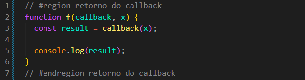
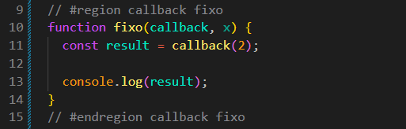

Callback Questions
Intro
Entendendo melhor callback e seu funcionamento.
Entendendo melhor callback e seu funcionamento.
Dessa forma, criamos uma função que recebe um callback e um valor x. O callback será executado utilizando o valor recebido em x.
function f(callback, x) {
const result = callback(x);
console.log(result);
}

Para descobrirmos o resultado do callback, podemos passar uma arrow function ou uma function tradicional:
f(a => a * 2, 10);
function c(valor) {
return 2 * valor;
}
f(c, 10);
Arrow function: "a" recebe o valor 10 através de callback(x). O outro 2 é o valor pelo qual iremos multiplicar "a". Resultado: 10 * 2 = 20.
function c(valor): temos a mesma lógica. A função recebe o valor através do parâmetro valor. Quando executamos f(c, 10), a função f passa o valor 10 para o callback, fazendo com que valor receba 10.
Neste exemplo, o callback sempre receberá o valor 2, independentemente do valor passado para x.
function fixo(callback, x) {
const result = callback(2);
console.log(result);
}

Ao fazermos callback(2), estamos passando diretamente o valor 2 para o callback. Por isso, o valor recebido em x não é utilizado.
fixo(a => a * 2, 10);
function cFixo(a) {
return a * 2;
}
fixo(cFixo, 10);
Nesse caso, o 10 é ignorado, pois a função fixo não passa x para o callback. Ela passa diretamente o valor 2.